-
-
λεμονάδα
πέντε βεράντες
τρεις φαμίλιες
μια απ' τα ίδια
γιος χοντρός
πατριός μαλάκας
μάνα ψόφια απ' τις δουλειές
και 1/3 από καρπούζι στον καθένα
συζητούν για διακοπές/βαθμούς/λαϊκές
με τ' αυτοκίνητο τρεις μήνες από κάτω κολλημένο
και τη βόνταφον απλήρωτη
σκατά
τσίτα τέρμα οι ειδήσεις από μέσα
πλέουν τα όνειρα νεκρά μες στα σερβίτσια του καφέ
λεμονάδα και παρφέ
ήχοι φίφα/ξύλο/σάμμερ χιτς
και λιώσιμο στον ήλιο
σαν βαλκάνικο μαϊάμι
με τους φοίνικες ν' ανάβουνε το βράδυ
ίσα ίσα για να βλέπουν λίγο κι οι μικροαστοί
πόσο απέχει το τσιμέντο απ' το μπαλκόνι
μη γλιστρήσουν καμιά μέρα
κατά λάθος ε
bad lungs
αγκαζέ απ' το μετρό το στρες κι εγώ
σκαλί σκαλί κι οικονομία στις ανάσες
μέχρι να 'ρθω να σε βρω
(ή τα σκαλιά μού βγουν σωστά)
και τα τι κάνεις
τα γνωστά
ε μια χαρά μωρέ εσύ
που τα βαριέμαι αν δεν στα λέω από κοντά
με το στόμα μου θαμμένο στο μουνί σου
μα δεν σ' αρέσει η κελέλα ούτε εσύ πλέον σ' εσένα
κι έχω μείνει από λέξεις που δεν γλείφουν
και σου μάλλιασε η γλώσσα με τα
γάμα μας αλήθεια μην αρχίζεις να χαρείς
ώσπου φτάνεις στο φιλτράκι
βήχεις μια και κουλουριάζεις
σου λέω κόψε να γαμάς πια τα πνευμόνια σου
μου κάνεις *κάνιε σραγκ*
και λες μετά πως τζάμπα αγχώνομαι
και η ώρα βγάζει πόδια μπας και πιάσει το μετρό μου
δεν μου φτάνουν τα λεπτά να ξαποστάσω
να σου πω ότι φοβάμαι μη μου λείψεις
και βουλιάζω τη φωνή μου στην ερτ3
που 'βαλε παραγγελιά
να σου λέω μαλακίες που δεν νιώθω
μπας και νιώσεις κάτι πια και για εμένα
αηδία πχ έστω
ότι άνετα θα γάμαγα τη γώγου
δορυφόρος
ο ήλιος θρέφει τα σημάδια μου
ποτέ δεν μ' είδε να γελάω η μάνα μου
δεν ξέρω αν με δυσκολεύει να το λέω
ή ο αόριστος που κάποτε θα 'ρθει
στο σαγόνι μου τα χαντ γκανς με δροσίζουνε
και χαίρομαι
γλιστράω απ' την ατμόσφαιρα και πέφτω στο ταβάνι
κολυμπώ μέσα στη πίσσα μου και πνίγομαι
το σώμα τόσα χρόνια στη στεριά
με ξεσυνήθισε
το κύμα με τραβά απ' τα μαλλιά
και κουτουλάω δορυφόρους
μέχρι να 'βγει από μέσα μου η αστρόσκονη
και μπούνε τα μυαλά μου σε τροχιά
γύρω γύρω απ' την ακτή
γύρω γύρω μέχρι να με πάρει ο διάολος
μα μ' άφησε η ανάσα μου πριν βγω στα ανοιχτά
αφού δεν έχω τα αρχίδια για κολύμπι μες στη νύχτα
ή έστω ν' άλλαζα τον τίτλο
λέμε τώρα
σε εντυπώσεις ενός πνιγμένου
κριστίνα ρόουζ
ακόμα μία σκατομέρα στο μαϊάμι
με τον ήλιο όλο τ' απόγευμα στην πλάτη σου
ο σκύλος ίσα ίσα που σαλεύει στο καμίνι
κι ίσα που γλιστράς κι εσύ πάνω στην παραλιακή
φανάρι πάνω στη στροφή και μποτιλιάρισμα
σηκώνεις βλέμμα πάν’ απ' τα γυαλιά να ψάξεις φάτσες
αλλά τζίφος
ένας ντρόσχο σ' ένα χρέπι χόντα σίβικ
δυο μπαφιάρηδες ντελίβερι των γουέντις
κι ένα τόσο δα κορίτσι στο παράθυρο να κλαίει
οι ευαίσθητοι θα βρουν εδώ καμιά αλληγορία
αλλά ποιος να τους γαμά τώρα κι αυτούς
ακόμα μία σκατομέρα στο μαϊάμι
πόσοι άραγε θυμούνται το όνομα σου
το τηλέφωνο χτυπά μόνο αν είναι για το νοίκι
το τλ γέμισε ίνσελς
και οι μέρες βγαίνουν πλέον στο κρεβάτι
να κοιτάς τις ηλιαχτίδες να περνούν απ' τις περσίδες
σαν τις μέρες
ν' αργοσβήνουν λίγο πάνω από τον κώλο
με την σκέψη ότι κάποιος κάπου τώρα
θα την παίζει με αυτόν στα μουλωχτά
οι ευαίσθητοι θα βρουν εδώ ολίγη χυδαιότητα
θα φταίει τελικά που δεν τους γάμησε κανείς
παζλ
νο καπ νο καπ
μαζεύω από το πάτωμα τα μούτρα μου
τα παίρνω αγκαλιά και μου ανοίγουνε τις φλέβες
που 'χουν γίνει συντριβάνια να ποτίζουν το παρκέ
νο καπ νο καπ
τα χέρια μου κολλάνε στους καρπούς μου
δεν ταιριάζουν πια επάνω μου
θαρρείς πως θα με πιάσανε να κλέβω ή να κλαίω
τι στο διάολο τις ίδιες τύψεις νιώθω
νο καπ νο καπ
η πόρτα ανοιχτή μπας και περάσει
να μου πει καμιά κουβέντα περί τέχνης και κουλτούρας
μα όταν μπαίνει δεν μιλά και με το βλέμμα με ζυγίζει
φίφτι φίφτι αμα μ' έχει ή τον έχω
πριν του κάνω 'γω τη μούρη σκέτο παζλ
νο καπ νο καπ
μΑ εΙνΑι τΩρΑ πΡάΓμΑτΑ αΥτΑ
σουίτ τσίν μιούζικ στο πηγούνι πάρ' τον κάτω
δΕν ΣαΣ μΑθΑνΕ σΤο ΣπΙτΙ αΠό ΤρΟπΟυΣ
7 χρόνια γρουσουζιά
πΟυ ΕίΝαΙ η ΤέΧνΗ σ' ΟλΟ αΥτΟ κΑι Η κΟυΛτΟυΡα ΣαΣ
ρε πούστη την κοιτάς
58Hz
σόοορρυ λάθος δεν σας είδα
μα χτυπούν τους ώμους πάνω μου
μπροστά μου οροσειρές ο ένας πίσω από τον άλλον
και σηκώνω τους δικούς μου
(λες και μεταδοτικά)
να περάσουνε χωρίς πολλά πολλά
μη και δουνε που κοντά τους λαχανιάζω
μη και δουν που 'χω κολλήσει ίδια θέση από χτες
και πέφτω πάνω στις κορφές τους
δεν προφταίνω να τους πιάσω
γιατί τρέχουν την ζωή τους πάνω στα 60 χερτζ
κι εγώ ξοπίσω μια ανάσα κάπου στα 58
με γαμήσαν τα παυσίπονα στα πόδια
και με πιάσανε στο τρέξιμο οι πόνοι
κουβαλώντας σαν ηλίθιος το κρίμα στο λαιμό μου
τερακότα
παραθαλάσσιες πολυκατοικίες
3κ κυβικά στη πυλωτή
στο πιάτο παραλιακή και ταϊλανδέζικο
περίπτερα και δίπλα γκαλερί
χορτασμένα ρετιρέ από τον ήλιο
να χορεύουν πέρα δώθε μπρος στα μάτια μου
καρμπόν με τους εστέτ παππούδες δίπλα στο παγκάκι
που παίζουν σκάκι σαν να παίζανε μπουνιές
με τα βλέφαρα σπασμένα και το μέτωπο ψημένο
λες και είναι τερακότα
κάρτα μέλους για τα γιάβα στα κλειδιά
σπίτι προκάτ από κατάλογο ικέα
γάλα σόγιας στο ψυγείο
και το σόι βολεμένο στο γραφείο
με τον λίβα να χτυπάει καβαλάω μια βεράντα
βουτάω βίζιτες και γόνους στο ισόγειο
και μπάζω μέσα πρόσφυγες πουτάνες και πρεζάκια
για να δείχνουν από κάτω με το δάχτυλο οι γέροι
μπας και κόψουν καμιά ώρα την βλαστήμια
για να κάνουν τον σταυρό τους
χίλια ανοιχτά ταμπς
στ' ακροδάχτυλα ο κόσμος
μου γλιστρά και μου ξεφεύγει
και το φόμο με το στρες γαμάει τον ύπνο μου
μ' ακίδες μες στα βλέφαρα και μάτια φαγωμένα
τριγυρνώ σε δυο διαστάσεις τ' απογεύματα
κονιέκ
χίλια ταμπς μες στο κεφάλι μου
στο ένα κολυμπώ πάνω στην πανεπιστημίου
στο άλλο σφάζομαι μ' αγνώστους
στο παράλλο πέφτω τέζα με τις ψείρες στα αφτιά
όσο στο πάτωμα χορεύουν κατσαρίδες
κάθε μέρα κάθε μέρα κάθε μέρα
τα πνευμόνια μου βουλιάζουνε
ο βρόχος σπάει μόνο μ' ένα γ
και δεν το 'χω με τα γράμματα ΓΑΜΩ
πιο πολύ από το άξιον εστί
με συνεπήρε το μπικόζ δε ιντερνέτ
πιο πολύ απ' την οδύσσεια
με κράτησε η δίκη
πιο πολύ απ' τον κυνόδοντα
με μάσησε η φωτιά
κάνοντας κύκλους μες στη νύχτα
καλύτερες οικογένειες
μου βούλωσες τα μάτια με κερί
μου έτριψες τη ράχη στο σαπούνι
μπας κι ασπρίσουνε τα μέσα μου
μ' έπνιξες στο γάλα και την πίκρα σου
με έκλεισες στα χέρια σου
επάνω σου με κλείδωσες
για να σε συνηθίσω
στάχτη έσταξε επάνω στα μαλλιά μου το τσιγάρο σου
βουτάς στα ραφτικά σου για κλωστές
να μου ράψεις τα ανοίγματα
που είχα στη κοιλιά μου από τη γέννα
μην ποτίσει η βροχή τα σωθικά μου
μα τι σκάω
θα υπάρχουν και χειρότερα
θα ήμουνα κι εγώ μαλακισμένο
τι να πεις
ίσως συμβαίνουνε κι αυτά
και στις καλύτερες ακόμα οικογένειες
μοντρεάλ
καιρό θα είχε να σε πιάσει
γιατί η πλάτη σου στο χέρι μου αγρίεψε
σου λέω ακούμπα πάνω μου
και μόνο που δεν γέλασες μαζί μου
μα ούτε πρόλαβες να γνέψεις
ρίζες πέταξες και τον κορμό μου τύλιξες
μου λες δεν είναι πια από ανάγκη
είναι βλέπεις η συνήθεια μωρέ
δεν σε πειράζει έτσι
ειδάλλως θα μου το 'λεγες
καλά δεν λέω
μίλα μωρέ άλεξ
ξερωγώ
ντ' ακκόρ ντ' ακκόρ
οι κυνόδοντες σου ο πιο μικρός μου θάνατος
γαμώτο κι είχα τόσα να σου πω
πχ
να σ' είχα όταν ξυπνάω το πρωί
σ' όλο τον κόσμο να σε γύρναγα τουρνέ
να σε γαμούσα στο μπαλκόνι ενός χοτέλ στο μοντρεάλ
γιατί ποτέ δεν είχα σπίτι να το λέω σπίτι
εκτός από εσένα
πόσο εύκολα που λύνεται μαζί σου το μυαλό μου
σουρεάλ
πόσο γλυκά κλειν' ο λαιμός σου μες στα χέρια μου
κρίσεις πανικού σε πραγματικό χρόνο
μου κλωτσά τον κώλο ο χρόνος
κι εγώ λιώνω σαν ψυχάκιας
με τα δάχτυλα μετρώντας πόσες μέρες
θα μου πάρει παριστάνοντας πως ζω
λες και γερνώ ιν ρίαλ τάιμ
για να δω πάλι το μούτρο σου
παράσιτα στα άκρα μου
κι ο κόσμος μου ανάποδα ως τότε
σαν στο κλάιμαξ του νόε
ντατς τιλτ
αμερικέν
νέτφλιξ εντ τσιλλ
κι ημικρανίες που περνούν μονάχα πάνω σου
πως σπάει ο καναπές για χωρέσει
δυο κορμιά μέσα στη λύσσα να γυρνάνε
με ιδρώτα σκέτη ζάχαρη να τρέχει από τα ρούχα
είσ' η πιο καυλωτική που 'χα ποτέ μου
από κρίσεις πανικού
κι εγώ λέιτ μπλούμερ
γιατί άνθισαν μαζί σου οι αισθητήρες μου
άλεξνετ
μάνα φεύγω για το μόμα
εδώ με πνίγουν
τα μπαλκόνια έχουν μάτια και τα όνειρα παγίδες
πάνω απ' τις εργατικές
αθήνα ατλάντα
η ζωή σκέτο ροντέο
όλη μέρα γύρω γύρω απ' τη δαγκάνα
και η τέχνη η μόνη ντόπα
(πως να μη γίνεις μετά στερητικό)
δεν σταματώ
μέχρι η φάτσα μου να γίνει κορεό πάνω στο πέταλο
διαμάντι μες στο κάρβουνο
ον γκοντ
κουβαλώ τον εαυτό μου πιο καλά
πάτερ τράβα μου τα χέρια από τη ρίζα
νιώθω κάνιε πριν το γίζους
και για αυτό ευχαριστώ το σπιτικό μου
τις γριές στα λεωφορεία
τους παλιούς συμμαθητές που δεν μιλάμε πια
τον δήμο αθηναίων
κι άμα ξέχασα κανέναν
για λουλούδια και παράπονα διεύθυνση 127.0.0.1
αμπάουτ
It was a simple matter to throw off the covers; he only had to blow himself up a little and they fell off by themselves. But it became difficult after that, especially as he was so exceptionally broad. He would have used his arms and his hands to push himself up; but instead of them he only had all those little legs continuously moving in different directions, and which he was moreover unable to control. If he wanted to bend one of them, then that was the first one that would stretch itself out; and if he finally managed to do what he wanted with that leg, all the others seemed to be set free and would move about painfully. "This is something that can't be done in bed", Gregor said to himself, "so don't keep trying to do it".

{kind=link}
{kind=link}